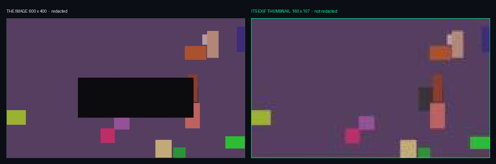

Hidden information إخفاء المعلومات
You have an image you trust and a file listing you can read. This page is about everything in that image the listing will never show you — and the discipline of saying what you found without saying why it is there. صار لديك صورة تثق بها، و قائمة ملفات تستطيع قراءتها. و هذه الصفحة عن كل ما في تلك الصورة مما لن تُظهره لك القائمة أبدًا — و عن الانضباط في ذكر ما وجدته دون ذكر سبب وجوده.
| Topic | Minutes | Hands-on |
|---|---|---|
| T10 Hidden Data & Image Forensicsإخفاء البيانات و تحليل الصور | 80 | Yes |
Every number on this page is measured from EVS-10, generated in this repository and hash-verified. Where you see an offset, a pixel count or a timestamp, it came from the file.
كل رقم على هذه الصفحة مقيس من EVS-10، المولَّد داخل هذا المستودع و المتحقَّق من قيم الـ hash الخاصة به. فحيثما ترى إزاحة أو عدد بكسلات أو طابعًا زمنيًّا، فقد جاء من الملف نفسه.
Where we are أين نحن الآن
`T04` taught you that a file’s name is a label and its bytes are the file. This page adds the next step: even when the name and the bytes agree, the file can still be carrying something that neither of them mentions. علّمك `T04` أن اسم الملف لافتة، و أن bytes الملف هي الملف. و تضيف هذه الصفحة الخطوة التالية: حتى حين يتفق الاسم مع الـ bytes، قد يظل الملف يحمل شيئًا لا يذكره أيٌّ منهما.
- read the size before you open anything — it is free and it catches the loudest cases. أن تقرأ الحجم قبل أن تفتح أي شيء — فهو مجاني و يمسك أوضح الحالات.
- report what is present, never why someone put it there. أن تُقرّر ما هو موجود، لا لماذا وضعه أحدهم هناك.
What you will be able to do ما الذي ستكون قادرًا عليه
- read the four timestamps on a photograph and say which one is the camera and which is the file system. أن تقرأ الطوابع الزمنية الأربعة على صورة، و تحدّد أيّها من الكاميرا و أيّها من نظام الملفات.
- recover an EXIF thumbnail and explain why it can outlive an edit to the picture. أن تستخرج thumbnail من الـ EXIF، و تشرح لماذا قد يبقى بعد تعديل الصورة.
- find data appended after the end-of-image marker, and identify a polyglot. أن تجد بيانات مضافة بعد علامة نهاية الصورة، و تتعرّف على الـ polyglot.
- detect LSB steganography by channel statistics, and state what that detection does and does not prove. أن تكتشف LSB steganography عبر إحصاءات القنوات، و تحدّد ما يُثبته هذا الاكتشاف و ما لا يُثبته.
- run the four checks in cost order, so most files are answered before a tool is opened. أن تُجري الفحوص الأربعة بترتيب التكلفة، فتُحسم معظم الملفات قبل فتح أي أداة.
What a picture keepsما تحتفظ به الصورة
A photograph is a container. Most of what a court finds interesting about one is not in the picture at all.الصورة الفوتوغرافية وعاء. و معظم ما يهمّ المحكمة فيها ليس في الصورة أصلاً.
A photograph is a container الصورة وعاء
Open a JPEG in a viewer and you see one thing: the picture. Open it as bytes and you see a small archive — a header, a metadata block, often a second copy of the picture, the image data, and an end marker. افتح ملف JPEG في برنامج عرض فترى شيئًا واحدًا: الصورة. و افتحه بوصفه bytes فترى أرشيفًا صغيرًا — header، ثم كتلة بيانات، و غالبًا نسخة ثانية من الصورة، ثم بيانات الصورة، ثم علامة نهاية.
A viewer stops reading at FF D9. You do not. Anything after that marker is carried by the file, ignored by every program that displays it, and invisible in a folder listing — except in one place: the size.
يتوقّف برنامج العرض عن القراءة عند FF D9. أما أنت فلا. فأي شيء بعد تلك العلامة يحمله الملف، و تتجاهله كل البرامج التي تعرضه، و لا يظهر في قائمة المجلد — إلا في موضع واحد: الحجم.
Four timestamps on one photograph أربعة طوابع زمنية على صورة واحدة
office_floor3.jpg from EVS-10 carries four dates, and they name three different days. Each one answers a different question, and confusing them is the most common error in a photo finding.
يحمل office_floor3.jpg من EVS-10 أربعة تواريخ، تشير إلى ثلاثة أيام مختلفة. و كلٌّ منها يجيب عن سؤال مختلف، و الخلط بينها أكثر الأخطاء شيوعًا في finding يخصّ صورة.
FINDING. The file office_floor3.jpg carries DateTimeOriginal 2026:08:24 09:14:02, DateTime 2026:08:31 16:40:05, and a Software tag reading MRG ImageTool 2.4. It also carries GPS coordinates 30°2'27.60"N 31°14'13.20"E.
FINDING. يحمل الملف office_floor3.jpg قيمة DateTimeOriginal 2026:08:24 09:14:02، و قيمة DateTime 2026:08:31 16:40:05، و حقل Software يقرأ MRG ImageTool 2.4. كما يحمل إحداثيات GPS 30°2′27.60″N 31°14′13.20″E.
Assessed with high confidence that software wrote this file on 31 August, seven days after the exposure recorded in DateTimeOriginal. Considered and not excluded: a metadata field edited directly, which would produce the same reading.
أُقدّر بثقة عالية أن برنامجًا كتب هذا الملف في الحادي و الثلاثين من أغسطس، أي بعد سبعة أيام من لحظة التصوير المسجّلة في DateTimeOriginal. و مما نُظر فيه و لم يُستبعد: تعديل حقل بيانات مباشرةً، و هو ما ينتج القراءة نفسها.
What a photograph cannot prove ما لا تُثبته الصورة
EXIF is written by software, and every field in it can be edited by software. That does not make it worthless — it makes it a claim with a known author. الـ EXIF يكتبه برنامج، و كل حقل فيه يمكن لبرنامج أن يعدّله. و هذا لا يجعله بلا قيمة — بل يجعله ادّعاءً معروف الكاتب.
It records where a device reported itself to be when the file was written. It does not prove who held the device, and a coordinate can be edited in seconds. يسجّل الموضع الذي أعلن جهاز أنه فيه لحظة كتابة الملف. و لا يُثبت من كان يحمل الجهاز، و الإحداثية تُعدَّل في ثوانٍ.
DateTimeOriginal dates an exposure, not the thing in the picture. And an absent EXIF block proves nothing at all: most social platforms strip it on upload.
يؤرّخ DateTimeOriginal لحظة تصوير، لا الشيء الذي في الصورة. و غياب كتلة الـ EXIF لا يُثبت شيئًا مطلقًا: فمعظم منصات التواصل تحذفها عند الرفع.
Opening a photo and saving it again can rewrite DateTime, insert a new Software tag, and re-encode the pixels. An innocent edit and a deliberate one leave the same traces.
فتح صورة و حفظها من جديد قد يعيد كتابة DateTime، و يُدخل حقل Software جديدًا، و يعيد ترميز البكسلات. و التعديل البريء و المتعمَّد يتركان العلامات نفسها.
The thumbnail that outlived the edit الـ thumbnail الذي بقي بعد التعديل
A camera writes a small copy of the picture into the EXIF block. Many editors draw on the pixels and never rewrite that copy. invoice_batch.jpg from EVS-10 is exactly that case.
تكتب الكاميرا نسخة صغيرة من الصورة داخل كتلة الـ EXIF. و كثير من برامج التحرير ترسم على البكسلات و لا تعيد كتابة تلك النسخة أبدًا. و invoice_batch.jpg من EVS-10 هو هذه الحالة بالضبط.

scripts/make_evs10.py.Main image 600 × 400, redacted. EXIF thumbnail 1,735 bytes, 160 × 107, and the region under the black box is legible in it. الصورة الرئيسية ٦٠٠ × ٤٠٠، محجوبة. و الـ thumbnail داخل الـ EXIF حجمه ١٬٧٣٥ byte، و أبعاده ١٦٠ × ١٠٧، و المنطقة تحت المربع الأسود مقروءة فيه.
This is not a trick; it is the ordinary behaviour of most image editors. Which is why redaction is done by exporting a new file, never by drawing on an old one — and why you check the thumbnail of every redacted image you are handed. هذه ليست حيلة، بل السلوك المعتاد لمعظم برامج تحرير الصور. و لهذا يتم الحجب بتصدير ملف جديد، لا بالرسم على ملف قديم — و لهذا تفحص الـ thumbnail في كل صورة محجوبة تصلك.
ThumbCache — the copy outside the file الـ ThumbCache — النسخة خارج الملف
Windows also keeps thumbnails in a database of its own, per user, at %LocalAppData%\Microsoft\Windows\Explorer\thumbcache_*.db. Those entries survive deleting the picture.
يحتفظ Windows أيضًا بنسخ مصغّرة في قاعدة بيانات خاصة به، لكل مستخدم، في المسار %LocalAppData%\Microsoft\Windows\Explorer\thumbcache_*.db. و هذه المدخلات تبقى بعد حذف الصورة.
| EXIF thumbnail | ThumbCache | |
|---|---|---|
| livesمكانه | inside the fileداخل الملف | in a per-user databaseفي قاعدة بيانات لكل مستخدم |
| survives deleting the pictureيبقى بعد حذف الصورة | no | yes |
| proves the file was on this machineيُثبت أن الملف كان على هذا الجهاز | no | it is evidence of viewingدليل على العرض |
| proves who viewed itيُثبت من عرضه | no | no |
That a file with that appearance was rendered in Explorer under this user profile. It does not establish that the file is still on the disk, that this user chose to open it, or when the viewing happened — the entry carries no reliable time of its own. أن ملفًّا بذلك الشكل عُرض في Explorer تحت هذا الحساب. و لا يُثبت أن الملف ما زال على القرص، و لا أن هذا المستخدم اختار فتحه، و لا متى جرى العرض — فالمدخل لا يحمل وقتًا موثوقًا خاصًّا به.
Hiding data, and finding itإخفاء البيانات و اكتشافها
Three techniques, in order of how loudly they announce themselves. Then four checks, in order of what they cost.ثلاثة أساليب، مرتَّبة بحسب وضوحها. ثم أربعة فحوص، مرتَّبة بحسب تكلفتها.
Three ways to hide data in a file ثلاث طرق لإخفاء البيانات في ملف
They differ in one property: how much the file has to change. That is also the order in which they become harder to find. تختلف الطرق في خاصية واحدة: مقدار ما يجب أن يتغيّر في الملف. و هذا أيضًا ترتيب صعوبة اكتشافها.
| Technique | What it does, and what gives it away |
|---|---|
| Renameإعادة التسمية | Change the extension and nothing else. Gives itself away in four bytes — this is the `T04` check.تغيير الامتداد و لا شيء غيره. و ينكشف في أربعة bytes — و هو فحص `T04`. |
| Appendالإضافة في النهاية | Put a second file after the end marker. The picture still opens. Gives itself away in the size, and in the bytes after FF D9.وضع ملف ثانٍ بعد علامة النهاية. و الصورة تُفتح كالمعتاد. و ينكشف في الحجم، و في الـ bytes التي تلي FF D9. |
| Embed in the pixelsالإخفاء داخل البكسلات | Change the least significant bit of each pixel. The size does not change and neither does the picture. Gives itself away in the statistics.تغيير أقل bit أهميةً في كل بكسل. فلا يتغيّر الحجم و لا تتغيّر الصورة. و ينكشف في الإحصاءات. |
The quieter the technique, the less it changes — and the more you need a reference to see it against. A rename needs no reference at all. LSB needs statistics, or a clean copy. كلما كان الأسلوب أهدأ، قلّ ما يغيّره — و زادت حاجتك إلى مرجع تقارن عليه. فإعادة التسمية لا تحتاج مرجعًا إطلاقًا، أما الـ LSB فيحتاج إحصاءات، أو نسخة نظيفة.
Appending, and polyglots الإضافة في النهاية، و الـ polyglots
Appended data is the most common hiding place and the easiest to check for. A polyglot is its refined form: a single file that is simultaneously valid in two formats, so both readers are correct. الإضافة في النهاية أشيع مواضع الإخفاء و أسهلها فحصًا. أما الـ polyglot فهو صورته المتقنة: ملف واحد صالح في آن واحد بصيغتين، فيكون كلا القارئين محقًّا.
| File in EVS-10 | What it is, and how it was found |
|---|---|
holiday_snap.jpg156 Bحجمه ١٥٦ byte | A ZIP named .jpg, containing inventory.csv. Found by the size first — and then confirmed by the first four bytes.ملف ZIP اسمه .jpg، بداخله inventory.csv. عُثر عليه بالحجم أولاً، ثم تأكّد بأول أربعة bytes. |
team_photo.jpg10,476 Bحجمه ١٠٬٤٧٦ byte | A valid JPEG that is also a valid ZIP, containing handover.txt. Found by a PK header at offset 10,296, after the end-of-image marker.JPEG صالح، و هو أيضًا ZIP صالح، بداخله handover.txt. عُثر عليه عند header قيمته PK عند الإزاحة 10,296، بعد علامة نهاية الصورة. |
team_photo.jpg passes the `T04` check — it really does start FF D8 FF E0 and it really is a JPEG. A file that is what it claims can still be carrying something else, and only reading past the end marker finds it.
ملف team_photo.jpg يجتاز فحص `T04` — فهو يبدأ فعلاً بـFF D8 FF E0، و هو JPEG فعلاً. فالملف الذي هو ما يدّعيه قد يظل يحمل شيئًا آخر، و لا يجده إلا قراءة ما بعد علامة النهاية.
LSB steganography إخفاء البيانات في أقل bit أهمية
The quietest technique on the page. It changes no file size, breaks no signature, and leaves the picture looking identical — because the change it makes is one step of colour out of 256. أهدأ أسلوب على هذه الصفحة. لا يغيّر حجم الملف، و لا يكسر أي signature، و يترك الصورة كما هي تمامًا — لأن التغيير الذي يُحدثه درجة لون واحدة من أصل ٢٥٦.
receipt_scan.png and receipt_scan_clean.png are the same 320×240 picture. 190 pixels of 76,800 differ (0.2%), and all 190 differ only in the blue channel. Red: 0. Green: 0.
الملفان receipt_scan.png و receipt_scan_clean.png هما الصورة نفسها بأبعاد ٣٢٠×٢٤٠. و ١٩٠ بكسل من أصل ٧٦٬٨٠٠ مختلفة (٠٫٢٪)، و كلها مختلفة في قناة الأزرق وحدها. الأحمر: صفر. الأخضر: صفر.
You will rarely be handed the clean twin. In a real case the channel asymmetry itself is the signal: a photograph’s noise is spread across all three channels, and a payload is not. نادرًا ما تحصل على النسخة النظيفة. ففي قضية حقيقية يكون التفاوت بين القنوات نفسه هو الإشارة: فضجيج الصورة الفوتوغرافية موزَّع على القنوات الثلاث، أما الحمولة فلا.
The four checks, in cost order الفحوص الأربعة بترتيب التكلفة
Three of these are free and answer most files. Run them in this order and you will open a tool only for the files that survived the first three. ثلاثة من هذه الفحوص مجانية و تُجيب عن معظم الملفات. نفّذها بهذا الترتيب فلن تفتح أداة إلا للملفات التي نجت من الثلاثة الأولى.
What detection does not establish ما لا يُثبته الاكتشاف
Finding hidden data is a measurement. Everything people want to say next is an interpretation, and most of it is not supported. العثور على بيانات مخفية قياس. أما كل ما يريد الناس قوله بعده فهو تفسير، و معظمه غير مدعوم.
A payload in a file does not prove who put it there, when, or why. Steganography tools are freely available and a file can be received rather than made. وجود حمولة في ملف لا يُثبت من وضعها، و لا متى، و لا لماذا. فأدوات الإخفاء متاحة للجميع، و الملف قد يكون مُستلَمًا لا مصنوعًا.
It means the checks you ran found nothing. Encrypted payloads, small payloads, and techniques your tool does not model all pass. Absence of detection is not detection of absence. يعني أن الفحوص التي أجريتها لم تجد شيئًا. فالحمولات المشفَّرة و الصغيرة، و الأساليب التي لا تعرفها أداتك، كلها تمرّ. و غياب الاكتشاف ليس اكتشافًا للغياب.
Some legitimate formats are polyglots by design. The finding is the structure, not a verdict. بعض الصيغ المشروعة polyglots بالتصميم. فالـ finding هو البنية، لا الحكم.
“The file team_photo.jpg is a valid JPEG and contains a ZIP local file header at offset 10,296, from which handover.txt was extracted.” That sentence is a measurement anyone can reproduce. Who put it there, and why, is not in the file.
«الملف team_photo.jpg ملف JPEG صالح، و يحتوي على ZIP file header عند الإزاحة 10,296، استُخرج منها handover.txt.» هذه الجملة قياس يستطيع أي شخص إعادته. أما من وضعها و لماذا، فليس في الملف.
Seven files, four ways of hidingالمعمل — سبعة ملفات و أربع طرق للإخفاء
The whole of EVS-10 in one pass, cheapest check first. Two files are renamed, one is a polyglot, one carries a payload in its pixels, and one is redacted in a way that did not work.مجموعة EVS-10 كاملة في جولة واحدة، بدءًا بالفحص الأرخص. ملفان أُعيدت تسميتهما، و واحد polyglot، و واحد يحمل حمولة في بكسلاته، و واحد حُجب بطريقة لم تنجح.
Lab — the seven files of EVS-10 المعمل — ملفات EVS-10 السبعة
Six steps, and the order is the point: each one is more expensive than the last, and each one answers a question the previous one could not. ست خطوات، و الترتيب هو المقصود: كل خطوة أغلى من سابقتها، و كل خطوة تجيب عن سؤال لم تستطع السابقة الإجابة عنه.
Two renamed files (meeting_notes.txt is a PNG, holiday_snap.jpg is a ZIP), one polyglot (team_photo.jpg, ZIP header at 10,296), one LSB payload (190 blue-channel pixels), and one redaction that did not reach the EXIF thumbnail.
ملفان أُعيدت تسميتهما (meeting_notes.txt هو PNG، و holiday_snap.jpg هو ZIP)، و polyglot واحد (team_photo.jpg، بZIP header عند 10,296)، و حمولة LSB واحدة (١٩٠ بكسل في قناة الأزرق)، و حجب واحد لم يصل إلى الـ thumbnail داخل الـ EXIF.
Case 03 — and the sentence you may not writeالقضية ٠٣ — و الجملة التي لا يجوز لك كتابتها
You have the findings. The exercise is the second half of the job: deciding which of them a report can carry, and in which section.صارت الـ findings بين يديك. و التمرين هو النصف الثاني من العمل: أن تقرّر أيّها يحتمله التقرير، و في أي قسم.
Case 03 — the brief القضية ٠٣ — الملف
A folder of seven files was recovered from l.bennett’s profile. The referral letter says only: “Suspected exfiltration. Please advise what is here.”
استُخرج مجلد فيه سبعة ملفات من حساب l.bennett. و لم يقل خطاب الإحالة سوى: «يُشتبه في تسريب بيانات. أفيدونا بما في هذا المجلد.»
| What you are asked, and what you can answer |
|---|
| “Is there hidden data here?” — Yes, and exactly where. Four findings, each reproducible from the bytes by another examiner.«هل توجد بيانات مخفية هنا؟» — نعم، و مكانها بالضبط. أربع findings، يستطيع فاحص آخر إعادة إنتاج كلٍّ منها من الـ bytes. |
| “Did she hide it?” — Not from these files. Nothing here carries an author.«هل هي من أخفتها؟» — ليس من هذه الملفات. فلا شيء هنا يحمل اسم فاعل. |
| “When?” — Not from these files. The only dates are EXIF fields, and software writes those.«متى؟» — ليس من هذه الملفات. فالتواريخ الوحيدة حقول EXIF، و البرامج هي التي تكتبها. |
“Is customer_export.7z the stolen data?” — the LSB payload names that string. Naming a file is not possessing it — `T17` and `T19` answer that.«هل customer_export.7z هو الملف المسروق؟» — الحمولة المخفية تذكر هذا الاسم. و ذكر اسم ملف ليس حيازةً له — و السؤال يُجاب في `T17` و `T19`. |
Three of the four honest answers are “not from these files”. That is not a weak result; it is the result, and stating it precisely is what the rest of the investigation is built on. ثلاث من الإجابات الأربع الصادقة هي «ليس من هذه الملفات». و هذه ليست نتيجة ضعيفة، بل هي النتيجة، و صياغتها بدقة هي ما يُبنى عليه باقي التحقيق.
Exercise — six sentences تمرين — ست جمل
Each sentence below could appear in a report about Case 03. For each: Finding, Interpretation, or not supported at all? If it is an interpretation, say what confidence and what alternative you would have to name. كل جملة أدناه قد تظهر في تقرير عن القضية ٠٣. لكلٍّ منها حدّد: هل هي Finding، أم Interpretation، أم غير مدعومة أصلاً؟ و إن كانت interpretation فحدّد درجة الثقة و البديل الذي عليك ذكره.
| # | The sentence |
|---|---|
| 1 | holiday_snap.jpg begins 50 4B 03 04 and expands as a ZIP archive containing inventory.csv.يبدأ holiday_snap.jpg بـ50 4B 03 04، و يُفكّ كأرشيف ZIP يحوي inventory.csv. |
| 2 | The suspect renamed the archive to avoid detection.أعادت المشتبه بها تسمية الأرشيف تفاديًا للاكتشاف. |
| 3 | 190 of 76,800 pixels differ between receipt_scan.png and receipt_scan_clean.png, all in the blue channel.يختلف ١٩٠ بكسل من ٧٦٬٨٠٠ بين receipt_scan.png و receipt_scan_clean.png، كلها في قناة الأزرق. |
| 4 | The photograph was taken at the office on 24 August.التُقطت الصورة في المكتب في الرابع و العشرين من أغسطس. |
| 5 | The EXIF thumbnail in invoice_batch.jpg shows content that the visible image redacts.يُظهر الـ thumbnail في invoice_batch.jpg محتوى تحجبه الصورة الظاهرة. |
| 6 | No hidden data is present in the remaining files.لا توجد بيانات مخفية في بقية الملفات. |
It is not supported, and it is the easiest of the six to write by accident. The honest form is “the checks described in Section 6 did not identify hidden data in the remaining files” — which names the method and leaves its limits visible. الجملة السادسة غير مدعومة، و هي أسهل الست كتابةً بالخطأ. و صيغتها الصادقة: «لم تُحدّد الفحوص الموصوفة في القسم السادس بيانات مخفية في بقية الملفات» — و هي صيغة تُسمّي المنهج و تُبقي حدوده ظاهرة.
Knowledge check اختبار سريع
A JPEG passes the signature check, opens normally in a viewer, and its size is unremarkable. Which single check would still find an appended ZIP? ملف JPEG اجتاز فحص الـ signature، و يُفتح بشكل طبيعي، و حجمه لا يلفت النظر. فأي فحص واحد سيظل قادرًا على العثور على ZIP مُضاف إليه؟
FF D9; the file does not. a tells you the file changed only if you already had an earlier hash of it. d finds LSB, which lives in the pixels, not after the end marker. And note the premise: this is exactly team_photo.jpg — a file that is genuinely what it claims and still carrying something.
ج. برنامج العرض يتوقّف عند FF D9، أما الملف فلا. و الخيار أ لا يفيد إلا إن كان لديك hash سابق للملف. و د يكشف الـ LSB، و هو في البكسلات لا بعد علامة النهاية. و انتبه إلى الفرض: هذا هو team_photo.jpg بالضبط — ملف هو فعلاً ما يدّعيه، و مع ذلك يحمل شيئًا.The one screen you keep openالشاشة التي تُبقيها مفتوحة
What a file carries, the three ways data hides, and the four checks in cost order — in the form you reach for at the keyboard.ما يحمله الملف، و طرق الإخفاء الثلاث، و الفحوص الأربعة بترتيب التكلفة — بالشكل الذي ستحتاجه على الجهاز.
Cheat sheet — metadata, hiding, detection ورقة المراجعة — الـ metadata و الإخفاء و الكشف
The page condensed to what you use when you look inside a file. الصفحة مختصرة فيما تستعمله وقت النظر داخل الملف.
- A file is a container. A photo carries EXIF, an embedded thumbnail, sometimes GPS — all written by software, all editable.الملف container: الصورة تحمل EXIF و thumbnail و أحيانًا GPS — كلها تكتبها البرامج، و كلها قابلة للتعديل.
- EXIF timestamps are claims.
DateTimeOriginal= shutter;ModifyDate= last write. The file records them; it does not witness them.توقيتات EXIF ادّعاءات:DateTimeOriginalلحظة المغلاق، وModifyDateآخر كتابة. الملف يسجّلها لا يشهد عليها. - The thumbnail can outlive the edit. Redact the main image and the embedded thumbnail — and ThumbCache — may still hold the original.الـ thumbnail قد يبقى بعد التعديل: تحجب الصورة الرئيسية و يبقى الـ thumbnail المضمّن — و ThumbCache — حاملًا الأصل.
- Three ways to hide — append after the EOF marker · a polyglot (valid as two formats) · LSB steganography in the pixels.ثلاث طرق للإخفاء: إلحاق بعد علامة نهاية الملف · polyglot يصحّ بصيغتين · LSB steganography في البكسلات.
- Four checks, cheapest first — size vs expected · bytes after the EOF · entropy · LSB analysis. Escalate only when the cheap check flags.أربعة فحوص، الأرخص أولًا: الحجم مقابل المتوقَّع · الـ bytes بعد النهاية · الـ entropy · تحليل LSB. لا تصعّد إلا إذا نبّه الفحص الأرخص.
- Detection proves presence, not intent. Hidden data is a finding; who hid it, when, and why are not.الكشف يُثبت الوجود لا النية. البيانات المخفية finding؛ أما من أخفاها و متى و لماذا فلا.
Handed in before P07يُسلَّم قبل P07
Your homework, then the first page where one examination fills two different report sections — and putting a line in the wrong one is the error.واجبك، ثم أول صفحة يملأ فيها الفحص الواحد قسمين مختلفين — و وضع السطر في القسم الخطأ هو الخطأ نفسه.
Task — find what is hidden, and stop there الـ task — اعثر على المخفي، ثم قف عنده
Three items. The third is the one that teaches the limit. ثلاثة بنود. و الثالث هو الذي يعلّمك الحدّ.
| # | Task | Deliverable |
|---|---|---|
| 1 | Take a photo with your own phone, then open and resave it in any editor. Compare DateTimeOriginal, DateTime and the file mtime before and after.التقط صورة بهاتفك، ثم افتحها و احفظها في أي برنامج تحرير. و قارن DateTimeOriginal و DateTime و الـ mtime قبل و بعد. | a four-row table |
| 2 | Append a small ZIP to a JPEG yourself, confirm the picture still opens, then find your own appended data with the offset check.أضف ملف ZIP صغيرًا إلى نهاية صورة JPEG بنفسك، و تأكّد أن الصورة ما زالت تُفتح، ثم اعثر على ما أضفته بفحص الإزاحة. | the offset you found |
| 3 | Write the Section 8 line for item 2 as if you had found it in a case — then write the Section 9 line, and mark which parts of it you cannot support.اكتب سطر القسم الثامن للبند الثاني كأنك وجدته في قضية — ثم اكتب سطر القسم التاسع، و حدّد الأجزاء التي لا تستطيع دعمها. | two lines, one marked |
Item 3 is doing something specific: you know exactly who appended that ZIP, because it was you. Writing the interpretation for a fact whose truth you already know is the fastest way to feel where the evidence stops. البند الثالث يفعل شيئًا محدَّدًا: فأنت تعرف بالضبط من أضاف ذلك الـ ZIP، لأنك أنت. و كتابة الـ interpretation لواقعة تعرف حقيقتها مسبقًا هي أسرع طريقة لتشعر أين يتوقّف الدليل.
Report — Sections 7 and 9 التقرير — القسمان الثامن و التاسع
Section 8 Findings takes what is measurably present. Section 9 Interpretation takes what you assess from it, with a confidence and a named alternative. Every line on this page belongs to exactly one of them. يأخذ القسم الثامن: الـ findings ما هو موجود بشكل قابل للقياس. و يأخذ القسم التاسع: الـ interpretation ما تُقدّره منه، بدرجة ثقة و ببديل مذكور. و كل سطر على هذه الصفحة ينتمي إلى واحد منهما فقط.
| Goes in Section 8 | Goes in Section 9 |
|---|---|
| the first four bytes, and the extension they disagree withأول أربعة bytes، و الامتداد الذي تخالفه | that the file was renamed — with a confidenceأن الملف أُعيدت تسميته — بدرجة ثقة |
| a ZIP header at offset 10,296, and what extracted from itZIP header عند الإزاحة 10,296، و ما استُخرج منها | that the archive was deliberately concealedأن الأرشيف أُخفي عمدًا |
| 190 differing pixels, all blue channel١٩٠ بكسلاً مختلفًا، كلها في قناة الأزرق | that a steganography tool was usedأن أداة إخفاء قد استُخدمت |
| an EXIF thumbnail whose content the image redactsthumbnail داخل EXIF تحجب الصورةُ محتواه | that the redaction was intended to remove that contentأن الحجب كان يقصد إزالة ذلك المحتوى |
Could another examiner reproduce it from the bytes alone? If yes, Section 8. If it needs a step of reasoning about a person, Section 9 — with a confidence and an alternative you considered. هل يستطيع فاحص آخر إعادة إنتاجها من الـ bytes وحدها؟ فإن كان نعم فالقسم الثامن. و إن احتاجت خطوة استدلال عن شخص فالقسم التاسع — بدرجة ثقة و ببديل نظرت فيه.
Summary — what you can now state الخلاصة — ما الذي تستطيع تقريره الآن
| You can state | Because |
|---|---|
| which of a photo’s four dates is the camera and which is the file systemأيّ تواريخ الصورة الأربعة من الكاميرا و أيّها من نظام الملفات | three of them are EXIF fields; the fourth belongs to the volumeثلاثة منها حقول EXIF، و الرابع ملك الـ volume |
| that a redacted image can carry an unredacted copy of itselfأن الصورة المحجوبة قد تحمل نسخة غير محجوبة من نفسها | editors draw on pixels and often leave the EXIF thumbnail aloneبرامج التحرير ترسم على البكسلات و تترك الـ thumbnail غالبًا |
| that a file passing the signature check can still carry another fileأن الملف الذي يجتاز فحص الـ signature قد يحمل ملفًّا آخر | a viewer stops at FF D9; the file does notبرنامج العرض يتوقّف عند FF D9، و الملف لا يتوقّف |
| how to detect LSB without the clean twinكيف تكتشف الـ LSB بلا النسخة النظيفة | a payload loads one channel; photographic noise loads all threeالحمولة تُثقل قناة واحدة، أما ضجيج الصورة فيوزَّع على الثلاث |
| that no hidden data was found is not no hidden data is presentأن لم نجد بيانات مخفية ليست لا توجد بيانات مخفية | the checks have a scope, and the sentence has to carry itللفحوص نطاق، و الجملة يجب أن تحمله |
- A file can be exactly what it claims to be and still be carrying something else. قد يكون الملف تمامًا ما يدّعيه، و يظل يحمل شيئًا آخر.
References and what comes next المراجع و ما يأتي بعد
| Source | Used for |
|---|---|
EVS-10 — generated by scripts/make_evs10.pyمجموعة EVS-10 المولَّدة من السكربت | every measurement on this page: offsets, pixel counts, timestamps, thumbnail sizeكل قياس على هذه الصفحة: الإزاحات و أعداد البكسلات و الطوابع الزمنية و حجم الـ thumbnail |
| INE eCDFP modules 2 and 4وحدتا INE eCDFP الثانية و الرابعة | image forensics, ThumbCache, hidden-data techniquesتحليل الصور، و الـ ThumbCache، و أساليب الإخفاء |
P03 `T04`الصفحة P03 و موضوع `T04` | the signature check this page extendsفحص الـ signature الذي تبني عليه هذه الصفحة |
Evidence note. EVS-10 is Tier 3 — synthesized, and legitimately so. The tier rules forbid fabricating forensic containers: .evtx, E01, raw images, memory dumps, registry hives. They do not forbid authoring a JPEG, and data we hid inside an image we made is ours to hide. Every file was regenerated and re-measured for this page.
ملاحظة عن الدليل. مجموعة EVS-10 من المستوى الثالث — مصنَّعة، و ذلك مشروع. فقواعد المستويات تمنع تلفيق الحاويات الجنائية: .evtx و E01 و الصور الخام و الـ memory dumps و الـ registry hives. و لا تمنع تأليف صورة JPEG، و البيانات التي أخفيناها داخل صورة صنعناها ملكنا نُخفيها كما نشاء. و قد أُعيد توليد كل ملف و قياسه من أجل هذه الصفحة.
Next: `P07` — Malicious files. This page found things hidden in a file. `T11` asks what happens when the file itself is the thing that runs. التالي: `P07` — الملفات الخبيثة. وجدت هذه الصفحة أشياء مخفية داخل ملف. و يسأل `T11` عمّا يحدث حين يكون الملف نفسه هو ما يعمل.